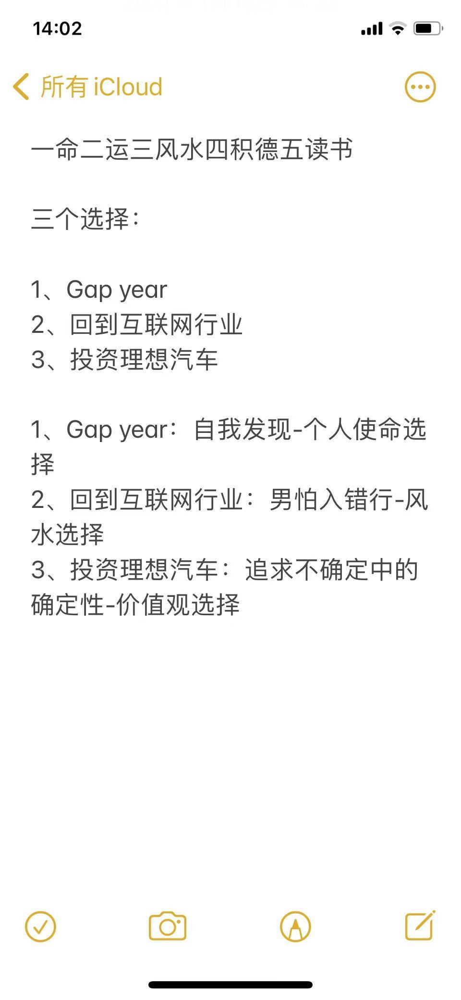

1993年高考选择清华是跟家长赌气，不愿意留在天津，代价是没办法选择我喜欢的专业。1998年毕业择业，其实没太好的选择，选择进入互联网行业，但是并没有合适的企业，投了很多软件公司和通讯公司的简历都没有着落，最后去广州其实也是无奈之举，当时手里只有这一个offer，所以就算是名校毕业，哪怕是90年代的名校毕业，也不是想去哪里就去哪里的。
那么人生的重大决策，除了工作选择，其实还有买房的选择，实话说，这方面我的判断也并不好，2002年买房的选择是正确的，但是地段的判断是彻底错误的。这里说来话长，就不展开了。后来几次买房的选择都有问题，卖房的时机也有问题，移民新加坡后，厦门市中心的房产卖在了暴涨的前夜，所以我不敢给别人做任何关于房产投资的分析。
所以这次，我们来做人生决策的课程，坦白说，并不是因为我一直正确，而是因为我能理解，关键决策对人生的影响和意义，并且愿意跟大家分享其中的成败得失。
搜索能力往往是被低估的一项基本素质，很多人很拽，说不能用百度，要用谷歌，其实百度也好，谷歌也好，擅长搜索的人，各取所需，不擅长搜索的人，用什么都不灵。
第一，你要知道关键词的不同组合，来追寻你认为有意义的信息。有些时候要多尝试，试一两个词找不到就放弃是很常见的行为。而且现在随着推荐系统越来越强大，很多人懒得去搜索，只靠平台投喂。 有价值的信息，要靠主动搜索，不要靠投喂！
第二，你要对不同关键词有好奇心，搜索引擎往往有各种提示词，有热榜。
第三，你至少要知道什么是自然结果，什么是推广结果，以及什么是官方网站，什么是山寨网站。确实有些山寨网站迷惑性很高，但你至少应该知道一些比对方式，特别是政府网站或教育系统网站的域名后缀。
第四，适度存疑，不要轻信别人的建议和推荐，要做适当的求证，多方信息的比对。 爱站，5118，新榜，清博
那么这里重复强调一下，你做出关键决策的时候，务必要自己主动搜索关键信息，不要指望别人把所有你需要的信息都投喂给你，如果你做出决策的依据全部是别人投喂给你的信息，我必须说，这个决策往往非常危险，如果是直系亲属，风险来自于他们的认知能力，如果不是，那么风险简直就太大了。
别人投喂给你的信息未必都是错的，都是坏的，比如某些自媒体的信息，我总不能说我的信息都是坏的，但如果你要基于我的信息做出决策，我建议你还是自己去主动搜索核对一下，而不是单凭我一面之词。坦白说，我不会为你的决策后果负责，你要自己为自己的决策负责。
1.2底层逻辑能力
俞军老师在2000年，新浪论坛上的帖子，和人论战，无限看好google，对微软，雅虎的搜索计划不以为然，是基于对搜索引擎的底层逻辑判断，他很清楚，雅虎和微软，都没有真正理解搜索引擎的价值和目标，仅仅当作是门户计划锦上添花的组成部分，而搜索引擎，作为人类知识获取能力的提升方式，是足以颠覆当时的互联网生态的存在。
这是俞军老师当年职场规划的决策基础。
我1998年大学毕业，虽然择业上不是很顺利，但是我认为互联网是改变人类的一场革命，并坚持以此为职业目标，就这一点而言，当时的判断是极为准确的。今天看上去这个判断似乎顺理成章，但是在上个世纪末，网民只有几百万的时候，这样的认知其实挺颠覆的。
2010年左右，安卓刚刚问世，我们在厦门就做出安卓智能手机将横扫市场的判断，当时很多互联网巨头还认为智能手机不是刚需，功能机将长期存在，而且认为塞班的优势不可动摇。
底层逻辑的基础是什么？
看技术，产品的底层价值，而不是仅仅看当前的市场表现。
即时通讯改变了人类的社交方式，造就了腾讯这样的巨头。 搜索引擎改变了人类的知识获取能力，造就了谷歌和百度。 电子商务改变了人类的购物方式，造就了阿里，京东，拼多多等等。 移动互联网的普及，不使用智能手机的用户会变成孤岛，其习惯将无法维系，这是2010年的底层逻辑。
但是在很多年前，很多人看不清，坦白说，我自己都看不清，至少2000年左右，我完全没看清腾讯和阿里的价值，否则我干嘛不去投效呢，那时候入职门槛又不高对不对。
底层逻辑还包括一些基本的判断准则
比如，我们不是天选之子，天上不会掉馅饼。 比如，尊重科学，没有永动机，没有水变油。 尊重科学还要多说一下，如果有革命性的科学成果，首先应该出现在最专业的科学期刊和杂志上，划时代的成果应该是重磅新闻，而不是只出现在某些地方媒体的广告频道里。
比如说，有人告诉你他们的AI技术超越了阿尔法狗，那你要知道，阿尔法狗可是刷了两次nature封面的技术成果，超越阿法狗，这种成就是值一个图灵奖的，如果连一篇sci都没有，那真的是半个字都不能信的。
比如，有人告诉你他发现了某些现代医学尚未解决的绝症的治愈手段，这是诺奖级的成果，没理由不刷爆主流媒体。而不需要用什么民族国粹之类的借口掩饰自己。
比如，有人告诉你，他用量子力学做成了什么牛逼的芯片产品，通常这也是国家级科技金奖的成就，新华社、人民网什么的总应该出来说两句的。如果是军用产品，那逻辑上你就不该在官方媒体通报前知道。按照这个逻辑去理解，这些骗术很容易被甄别。
但如果你还相信那些深山里藏着绝世武功，一出山就惊天地泣鬼神，这就没辙了。
底层逻辑通透，辅之信息甄别，筛选的能力，你对世界的认知就会上升一个台阶，虽然不能说你一定可以做出正确的决策，但一定能让你避免很多离谱的决策。
俞军老师为什么一直灌输产品经理要看经济学基础，其实就是提升底层逻辑能力。经济学理论中，博弈理论又是非常核心的，那么我们在做很多决策的时候，很多都是在进行博弈决策。
坦白说，现在即便很多高学历，高知识背景的人，往往也存在逻辑混乱，认知糊涂的情况。我必须强调一点，极端认知是逻辑的最大敌人，而舆论环境又特别喜欢煽动极端情绪。比如劳资关系，如果你百分百站在劳工权益这边，你觉得自己在维护劳工权益，但最终其实适得其反，资本是全球流动的，最终工作机会会被转移，劳工权益其实是受到损害的。但很多人真的看不到这一点。
看看博弈理论的书籍，学一些经济学的基础知识，试图理解所有革新产品的核心价值，可以把这些作为关键决策的基础。
1.3通识人性
有些讲谈判的书籍也是。谈判的目标是什么，是获得别人对你的支持和认可，而不是强调谁对谁错。我们职场，创业，很多时候都需要谈判。如果你现在创业，面对投资人，你认为你的方案无懈可击，而投资人却觉得这个领域没有机会，你非要纠正投资人的认知，这恐怕是没戏的，但有些创业者可以跨越认知差异，让投资人看到自己闪光的一面，让投资人觉得人才难得，从而改变主意进行投资，为什么能做到？
人性是什么，趋利避害是人性，自我保护是人性，自我高估也是人性。贪婪是人性，为自己的贪婪找借口也是人性。
很多时候，你觉得自己是对的，你做出了正确的判断和决策，但为什么别人不相信你，为什么别人不支持你，因为你没有站在别人角度思考，没有体会别人的心态。
我们试图理解一些逻辑是否成立，试图理解一些计划是否可行的时候，往往需要通识人性，比如说，你应该理解，信任是有成本的，是需要逐步建立的，无论是初入职场，还是服务你的用户，你应该循序渐进让别人信任你，给你机会，而不是试图一步到位改变别人对你的认识。
有些创业者，拿出一套创业方案，仔细一看，产品设想完全是异想天开，为什么，因为没有迎合人性，这时候，拉你参与创业，你需要决策了，这就是考验你判断力的时候了，你如果通识人性，很容易看到这样的问题，并且及早避开这样的项目。
职场内也是，你希望得到晋升，你希望获得认可，你不但要有业绩，也要通识人性，让你的同事支持你，让其他部门支持你，而不是光强调自己多优秀，很多人不知不觉得罪了同事，自己浑然不知，一些关键晋升的机会就被一些七七八八的负面评价阻碍了，还觉得都是别人的错。
我之前讲过，感恩不只是美德，为什么这么说，因为感恩往往能够更好的获得别人的信任，从而在某个关键时刻获得支持，这么说其实挺功利的，好像感恩都是有目的的，其实你养成这个习惯，真的是受益无穷。
我坦白说，我见过不少创业者，有些人在我心目中有坏印象，但我也不好意思公开说。那我随便举几个例子，只有需要我帮助的时候才联系我，平时从来不打招呼的，帮过忙也没什么表示的，这是一种。未经我许可把我的聊天记录发出去的，这是一种。自来熟特别不见外的，这是一种。餐桌上当着陌生妹子荤段子不停的，这是一种。当然，不同的人可能有不同的好恶，但是很多人，都是不知不觉在别人心目中留下差评，而自己浑然不觉。
我其实也不例外，我相信，我也没少在别人心目中留下差评。以前说少不更事，现在其实可能也没好到哪里去。
我最近还在跟空降的人才聊天提到，虽然确实有很多施展才华的空间，但不要一上来想着做出各种改变，先要吸收，看看数据，和团队多做沟通，理解不同层级，不同岗位的人的诉求、目标和他们的担忧，梳理清楚，然后看看怎样求同存异，做出合适的计划，循序渐进，建立信任基础，再逐步推进自己的目标。一上来就谈很多计划，第一，都没有认真聆听别人的想法和顾虑，很多计划可能本身就有问题。第二，没有信任基础，很多事情很难得到团队支持。
这是有过程的。
通识人性，也可以让你更好的判断别人给你信息，对你支持的真伪，动机和目标。通常，你的决策可能来自于其他人的建议，其他人的鼓动，或者参考其他人的经历。那么，你要能理解这个其他人，到底有几分可信。
一个常见的问题是，那些真正好心的人，往往不擅长话术和套路，提出的意见和建议往往令人心生憎恶。而那些擅长收割的人，却总能显露出一切都是为了你好的诚意来。所有成功的骗子，都通识人性，只有通识人性，才能完成收割。所以，如果你能通识人性，也可以少踩很多这样的坑。
看看心理学的专著。比如《这才是心理学》。
感觉还是有点单薄，说说人性的一些案例吧。
某些骗子会说，有个政府主持的慈善事业，需要你的资金，但会提供非常高的回报，而且如果你带动更多人进来，还会有下线佣金。这样的骗局前几年非常多。
首先，强调政府主持，获取信任。用回报满足人们的贪婪心理，然后用慈善给这些人的贪婪一个借口，贪婪是需要借口的，这就是人性的典型特征。你让这些人捐款给慈善事业，他们是不肯的，你说有高回报的慈善基金，他们满足了贪婪的底层欲望，又自我感觉非常有爱心。
自我保护也是一种人性，如果你当众批评某个人，哪怕你是对的，别人第一感也是反驳你，或者强调自己的正确。但如果你私下、用相对委婉的方式提出对方的某个问题，很多人还是愿意接受的，甚至感谢你。当然，我们说坦诚是沟通成本最低的方式，但这也因人而异，因事而异。阿里前几年的那种破冰文化，坦白说我是无法接受的。
自我高估更是人性了，我们做个思想实验，假如一个项目顺利完成，让每个成员都写出自己在项目中的贡献比重，然后汇总算算看，我相信一定是大幅度超过100%的。有兴趣的项目负责人可以试试看，友情提醒，如果公开讨论，出现撕逼状况，我概不负责。
人性还有选择性记忆和选择性遗忘，很多人会选择性记忆自己历史上的高光时刻和准确预见，选择性遗忘一些愚蠢的判断和预测，所以他们总觉得自己的才华被埋没。
通识人性，不但可以增强你的判断能力，还能增强你把握机会的能力。很多时候，你生命中的贵人就在不经意间出现在你的身边，如果你能通识人性，把握这种机会可能就会相对容易。
比如关键面试，比如面对投资人，比如重要的商务合作谈判，比如面对关键客户，比如职场晋升的考核答辩，比如与自己心仪异性的一个重要的约会，等等。
怎样才能被人信任，怎样才能被人喜欢，怎样才能让人信服。首先你要能尽可能的理解对方。
营销高手刀姐曾经写过她怎么钓到她老公的，首先她一直观察男神的朋友圈，了解对方的喜好，然后设置了一个专门分组，投其所好的发布一些专门给男神看的动态信息，很快对方就主动找她聊天，建立了共同话题。
课程设计到这里的时候，我有点觉得不好把握，从某种意义来说，理解人性，可以更好的让我们避坑，但也可以用来收割其他人。屠龙技在手，你要做英雄，还是恶龙，只能你自己斟酌。确实，很多诈骗犯，杀猪盘都是通透人性的大师。
1.4自我认知
通识人性，有助于我们更好的了解他人，更好的与他人合作，或者更好的理解商业模式。
但很多时候，我们分析别人容易，分析自己难。所谓当局者迷，旁观者清。所以，前面提到的一些人性特征，不但要用来理解别人，更要用来剖析自己，坦白说，剖析自己是个有点痛苦的过程，我们会不得不面对自己的猥琐，怯懦，贪婪，乃至放荡。不得不揭下自我保护的那些借口，直面自己的底层认知，原来自己那么多冠冕堂皇的理由，其实不过是掩盖自己的贪婪和私欲。
好吧，这个可能不适合过度展开，如果深度展开，我的读者可能会流失一大半。放弃一个让人绝望的所谓人生导师，比直面自己还是容易多了。
说个相对容易的，至少要知道自己擅长什么，不擅长什么；知道自己热爱什么，不热爱什么；最起码，要知道自己能忍受什么，不能忍受什么。
很多很多人的生活和职场是拧巴的，因为长辈的劝导，因为身边亲朋好友的期许，活成别人所期望的样子，但内心纠结痛苦，挣扎烦恼。
所谓跳出舒适区，其实是为了进入更为广阔深远的舒适区。所谓延迟满足，延迟是过程，满足是目标。
当然，我们不可能完全随心所欲选择自己所期望的生活，我自己也做不到，但这个世界还是给了我们很多选择权的，在很多时候，我们有选择权的时候，我们忘了自己想要什么。
有很多人说，公务员好不好，看你自己，喜欢不喜欢那种环境，愿意不愿意进入那样的氛围，你喜欢，你觉得那就是你理想的所在，我干嘛要拦着你呢；你不喜欢，你父母逼你去，那我告诉你，你应该有自己的选择。
运动员，勤奋练习，是为了赢得比赛，挑战自己的极限。 一个产品经理，磨练沟通技巧，是为了达成伟大的产品梦想。 一个技术专家，刷算法题，是为了挑战复杂的技术场景。
过程可能有些痛苦，有些不愉快，但最终挑战胜利的感觉是很好的。很多人努力奋斗，就是为了挑战一些目标，无论是技术、产品、还是身体机能。我说过，我读书的时候，做数学题是津津有味的，因为挑战成功的感觉很好，就跟玩游戏通关的感觉是一样的。
你要找到自己人生的挑战目标，基于这个目标，可以忍受一些过程中的不愉快，但最终还是要追求一个愉快的通关体验。当你很清楚自己的长远目标的时候，你对短期困境的忍耐力就会坚韧很多，持续前进的动力才会充足。
自我认知过程中，高估自己和低估自己都会出现，有的人倾向于高估自己，有的人倾向于低估自己。所以很早我有句话，王兴也说过类似的，现在也是适用的，别太把自己当回事，也别不把自己当回事。你可能不是天之骄子，但也不是一无是处。你需要的是，尽快确认自己的定位。
一些简单的自我认知的测试。
你上一次认为自己傻逼是什么时候，捡诛心的事情说，丢手机啦，忘了跟班主任打招呼啊，这种不算。如果你不记得自己上一次傻逼的时候，那么傻逼第一定律，“从来不认为自己傻逼的人，往往是不可救药的大傻逼”，就符合你了。
你觉得自己的天赋是什么，以及在你的天赋范围内，所取得的最辉煌的成就是什么？如果在你自认为的天赋领域内做不到轻松秒杀98%的同龄人，你的这个天赋可能有点水。
你最近的接受别人批评是什么时候，以及是否认为自己已经真的接受并改正了，那种“老总，我可要批评您，您太不注意保重身体了。”的批评不算。
这些测试，可以有助于认清自己是否存在认知障碍，过于高估自己，过于相信自己。
我其实很多年都没找到自我定位，我一直说自己杂而不精，确实我的职场经历比较奇葩，做过产品，做过研发，创业的时候啥都做，做过数据分析，做过IT售前，还写过自媒体。从领域来说，信息安全，搜索引擎，企业办公系统，电信计费营帐系统，呼叫中心，广告系统，商业分析系统，游戏社区，都有接触。其实很长时间，我都不知道自己适合做什么，也不知道自己职场目标是什么，这是真的。我没有俞军老师如此明确的追求和目标，我只是明确了互联网是个好的方向，但具体的领域，和我具体的能力，我是含糊不清的，而且很长时间，甚至说我在职场黄金期的时候，我还低估了自己所擅长的能力，这也是我职场比较吃亏的地方。
今天，有些话我敢说了，我的数据感超强，此外我的整体逻辑感很好，遇到一些具体技术问题，我的思维方式可以有助于快速定位问题和寻求解决途径，虽然我的算法能力不强，编程水平也一般，但分析问题和定位问题的能力，远远超过我编程体现出来的技术能力。当然，这也是十年前的表现，现在很惭愧，新的技术方案和技术路线已经看不懂了，更不要提分析问题、定位问题能力了。
人无完人，每个人都有自己擅长的地方，也有自己不擅长的地方，找到自己的优势，尽可能显露出来，在做关键决策的时候，尽可能选择可以显露自己优势，又能符合自己长远目标的路线。
前段时间和老板们谈人才话题，我就反驳了一些老板的观点，是不是公司所有问题都是人才不足的问题，我不这么认为，人才不足的问题往往是管理问题，以前4399招聘了很多低薪低门槛低背景的员工，这其中就有一些人，体现出了超强的成长性，成为业内的顶尖人才。我私下可以说出好几个名字，就不公开说了。
坦白说，他们其实短板也挺多的，低薪低门槛低背景的人，想想就知道，一开始看上去都很平庸，但如果能用其所长，给予一定的空间，发挥他们优势能力，还是有不少人可以快速成长，快速突破自己。（当然，能做到的也只是很少一部分，不可能每个人都成为顶尖人才）。
为什么说这个话题，回到今天的话题，我们有些背景不强的年轻人，其实也是有机会成长为顶尖人才的，但第一你要自己知道自己的优势在哪里，要想办法显露出来；第二，确实也要寻找给你空间，给你机会的舞台，也要有合适的管理者能带你成长，给你一些辅导和支持，有些时候可能确实有运气的成分，但不要轻易的放弃自己的成长可能性。不要过于低估自己的潜力。在很多领域，成为行业高端人才，未必需要强大的天赋。
这些够了么，还不够，还差一点，就是要有成本及风险评估的意识。
回到开始，当我们做关键决策的时候，必须意识到，很多事情是不能兼得的，你不能既要，又要。这时候，你要有一定的评估，比如你放弃了一个优渥薪酬的职位，去加入一个有前景的创业公司，你要知道你的机会成本是多少。
虽然很多成功案例告诉我们，为了追求梦想，可以不惜一切代价，但我们所能看到的，往往是幸存者偏差。
什么是机会成本，当你面临A、B两个选择的时候，你选择B的预期收益，就是你选择A的机会成本。
自己能承担的风险底线是多少，为了追求某种回报，自己付出的机会成本是多少，这个帐算清楚。
那么另一个就是我重复无数遍的，真的决定去尝试风险性的决策，务必牢记【止损原则】。此外，我旧文提过多次的，警惕那些让你ALL In的人。
政策及法规风险肯定是第一位的，很多创业者死于政策及法规风险，项目死掉的，算还好的，人进去的，也不少。
那么项目可行性风险，如何规避一厢情愿，异想天开，需要通识人性，需要自我认知，也需要对信息的充分获取筛选和底层逻辑判断。
信用风险，第一，你是否会因为某个决策失去信用，这个要理解信用成本，往往比你以为的要高。第二，你的预期回报是否存在信用风险，合伙人或老板的信用口碑如何。第三，一些关键资源，关键合作伙伴是否存在信用风险，也是要评估的，比如你特别依赖某个供应商，或者特别依赖某个技术专家，但这个依赖方是否可能违约，也是要考虑的。
市场环境风险，特别涉及投资领域，这个特别特别重要。我最近也在某个投资项目上亏了一些钱，也是遇到了市场环境的急剧恶化，不过还好，投资本身就是有风险预期的，反正亏的也不多，看在我还在努力赚钱的份上，老婆都没骂我。
大体如此，无论是选择就业，选择投资，还是选择一份职场工作，都会存在一定的风险。但是不是绝对风险规避，我觉得没必要，一定程度上，我们追求某些高回报，总要担当一些风险。以前说解放战争的杰出将领，60%的胜利可能性，就坚决开战了，不可能追求百分百的确定性。
我们的人生不止一次选择，我们的选择也不止一个结果，当我们发现存在一定的机会，具有一定的几率，只要这个几率大于某个预期值，是可以大胆去博的，谨小慎微有助于避坑，却无助于你的身价和资产增值。
评估风险，不代表害怕风险，或者一昧的躲避风险，正确的认识风险，但依然要有坚决果断的决心。
我最近几年胆子确实比较小，其实我早些年投资还是比较激进的，教训很多，失误很多，但现在毕竟也不算穷对不对。只要不ALL In，手里一直有筹码，凡事总有周旋的余地。
那么关于p2p理财，特别是懒投资，有不少读者指责我当年替他站过台，这个我觉得还是可以复盘一下当年的投资决策。
我们上一节讲的是如何制定决策，那么决策如果是错的，或者不是最优的，是不是就完蛋了呢？
有两点请大家务必记住。
第一，人生不止一个关键决策，不止一个机会，绝大部分情况下，你有其他的选择机会。学会拥抱变化是人生的一部分。
第二，错误的决策，或者没有选择最优决策，未必一定是坏的结果，凡事都有两面。
首先，要学会不断反思，复盘。正如前面所提，如果从不觉得自己之前的判断和决策傻逼过，那肯定是不可救药的大傻逼。有错误，有问题，是正常的，发现问题，找到原因，是成长的一部分。认知的成长，有助于在后续决策中，做出正确的选择。
第一部分：人生决策的四种类型
正向决策，长期来说，对个人成长，价值提升是正向的。但正向决策也存在很大的差异，比如15年前两份offer摆在面前，一份是腾讯，一份是华为，那么正常情况下，这两个选择都是正向选择，但不同选择的收益差异，却可能是非常巨大的。
也就是，我们要追求在正向决策中倾向于最优决策的路线。
负向决策，长期来说，对个人成长，价值提升是负向的。比如有人从一个很有前途的公司跳槽到一个资金盘的公司，然后钱没赚到还惹了一身麻烦。
灾难决策，导致无可挽回的灾难局面。
比如，欠一大笔赌债，或被杀猪盘骗的一无所有负债累累。 比如，做严重违法的事情，深陷牢狱之灾。 比如，做出肮脏丑陋的事情被曝光，遭遇行业封杀、社会性死亡。 比如，因一意孤行导致家庭破裂或亲人丧生，追悔莫及。 比如，酒驾导致严重交通事故，导致身体残疾。
我们关键决策追求的目标是，在保证做出正向决策的同时，尽可能靠近最优决策。
我们很难做到最优决策，但做到正向决策却不难，甚至于，普通人的大部分决策都是正向决策，比如你坚持读书学习，去报考大学，争取选择更好的offer，都是正向决策，我们的目标是达到最优决策，但这个很难，那么维持正向决策，不断向最优决策靠拢，是我们的目标。
在很多时候，我们所认为的错误决策，其实只是正向的程度不够，离最优决策距离有点远。比如在诸多offer中没有选择到成长最快，长期回报最高的企业。比如过早的卖出了重要资产，踏空了大幅的增值空间。这些其实都不是负向决策，但确实都存在进一步优化的空间。
同时，要尽力避免负向决策，不要被坑，被骗，不要以个人信用为代价换取蝇头小利，要有法律观点和道德底线等等。
灾难决策是很难挽救的，可能需要很长时间弥合创伤，很长时间的自我恢复。我希望我的读者不要出现这样的决策，真的真的承担不起。
而做出灾难决策，往往是一时冲动，以及对风险不以为然。。。
我相信这里的读者大部分应该自己没有经历过灾难决策，都可以复盘一下，自己不满意的关键决策里，哪些是正向的，哪些是负向的。
第二部分，谈谈关于决策的复盘
首先，要看你决策后的发展预期，是否和现实一致。比如你投资的回报，是否和你预计一致。比如你选择的职业和工作，是否符合你原本的预期。比如你创业设计的项目上线，用户的反馈，获客成本，团队组建，成本开销等等，是否与你计划一致。
如果不符合，原因是什么，是否有自己之前未考虑，未明确的地方，或者判断错误的地方。
其次，看市场及社会环境的变化，客观条件的变化，你之前做出决策的客观条件，市场环境是否还在维持，还是有了较大的变化，计划没有变化快是很常见的。意想不到的市场变化很容易带来自己计划的失败。
第三，不断反思自己认知上的误区，扩展视野边界，也许你之前的决策是当时认知中的最佳选择，但是你的认知提升了，视野提升了，资源提升了，你就应该想想，也许存在更好的决策。
第四，即便一切顺利，也要不断追寻细节，是否存在可能遗漏的风险和危机点。
比如，有那种早期加入巨头的，很好的选择，待遇和职位都还不错，人生也没什么苛求了，觉得一切都好。但是巨头老板要年轻化，要革命，要淘汰老白兔，很不幸，40来岁下岗了，这种还能去做什么呢？
一切顺利也是存在隐患和危机的，随时要用心体会，用心挖掘，给自己多一些选择，多一些后路。
还有很多投资者、创业者不懂得见好就收，可能做出了成功的投资决策和创业决策，但没有能及时收手，在市场环境剧烈变化的时候，因为厌恶损失，不断投入，最后一步步坠落到灾难决策。
这样的案例是很多的，为什么一些上市公司老板最后身陷囹圄。身价多少亿的时候，过于自信，失去了自我认知，市场逆转的时候，不断地试图挽救，最后铤而走险，做出灾难决策，导致自己失去自由。
不断复盘，总结之前决策的成败得失，第一是可以针对性的做出调整和改变。第二是有助于提升新的决策能力。
第三部分，谈谈关于决策调整
如果发现之前的决策结果，符合预期，甚至优于预期，但早期决策可能更多是方向上的，那么后续就应该有细化，或者更明确的调整。
比如工作决策选择某个岗位offer，并且指定了发展规划，进来之后发现确实不错，上司给力，同事都很融洽，那么下一步就应该细化这个规划，跟领导聊聊，是否有自己没想明白的地方，是否还有哪里可以提升，以及市场是否有新的变化，自己的发展规划是否应该与时俱进。
再正确的决策，也要不断迭代，来适应时代的变化。不要墨守陈规，觉得自己当年判断决策挺准的，就不再反思和调整了。
第二，改变和调整决策
市场环境发生了改变，或者虽然选对了方向，但发展远远达不到预期，这时候可能涉及改变决策。
列举一些常见的决策改变
更务实，摈弃一些好高骛远的目标，学会更好的理解所掌握的资源和能力局限，学会在有限资源，有限能力下做出最好的成果，这是一种常见的决策调整。
个人方向调整，比如在一个新公司，觉得公司发展前途很好，但自己的发挥空间有限，那么寻求公司内部调动的机会，寻求更好的发展空间。这也很常见。
修改商业模式，比如创业过程中，虽然用户指标达到了预期，但收入指标远远达不到预期，也许是模式产生了偏差，通过请教业内的懂行人士，以及基于用户行为的深度分析，调整商业模式，改变收入路径，突破困境。
横向拓展，发现新兴领域与自己核心业务具有高度的关联性，快速调整，横向拓展，覆盖新兴领域，搭上市场顺风车。
基于条件转变，比如创业公司招聘中发现一个超级牛人，有自己深刻的想法，或者在商业合作洽谈中发现有一个非常有潜力的合作伙伴，提供了令人无法拒绝的资源，那么基于新的资源新的竞争优势，对创业方向进行改变和调整。
改变和调整是很常见的，但并不是说你看到了什么好的方向，好的领域，就一定要调整，我见过一些创业者，确实思维敏捷，市场敏锐度高，但是改变和调整实在太频繁，做了很长时间，看上去什么风口都可以去抓，最后没有积累。
这里要强调一点，就是改变和调整虽然很多时候是有必要的，但请随时保持一定的积累。保持自身能力、价值的增长，尽量选择做有积累的事情。
第三，推翻和放弃决策
如果发现市场环境的改变，或者基于认知的提升，发现原有的决策所处的逻辑基础不再存在，或者发现原有的机会已经失去，要有坚决止损的决心。
很多时候，甚至可以说非常高的比例的情况下，人们之所以陷入困境，并不是因为做出了错误的决策，而是在有机会脱身的时候，没有止损。所谓投资高手，或者所谓一些顶尖牛人，他们决策的成功率未必高于普通人，但他们能够把决策错误的损失降到最低，而把决策正确的收益坚持到最大。
认知提升可以纠正很多错误决策，然后呢，就是快速止损。
损失厌恶心理是人们常见的心理特征，很多人因为产生了损失，试图弥补损失而做出更荒谬的决策，从而造成更大的损失，杀猪盘游戏也是利用这个心理，不断地榨干受害人的所有积蓄，而现在，更残忍，榨干受害人在各个平台的信贷额度。
灾难性决策往往是一时上头触发的，在损失厌恶的心理驱动下，人们很容易失去理智判断的能力。
这里再提一个非常关键的心得，就是坚持正确的事情，其实也很难。
有人说，坚持正确的事情怎么会难呢，我举个例子，比如你有10%的几率博取20倍的回报，你会不会投入？从概率统计来说，这就是正确的事情，第一次投入，失败了，第二次投入，失败了，第三次，你还会投入么？很多人就退缩了，不要说你，我也是，而且很多次，没有坚持正确的决策。
正确的决策，未必立即会有正确的结果，因为很多事情，并不是你决策正确就一定可以获得回报的，或者这个回报周期可能会比较长，很多人，做出了正确的决策，但受到了一些挫折，然后就退缩了，那么其实再坚持一下，可能就是非常光明的前程，就在黎明前的一刻，退缩了。
复盘的意义就在于此，你复盘得失成败的时候，要知道什么是对的，什么是错的，比如你投资一个企业股票，市场环境是否变化了，企业产品竞争力是否变化了，企业人力资源是否变化了，企业价值逻辑是否变化了，你对行业的认知是否变化了，你推断下来，发现虽然有所变化，但并没有发现根本利空的变化，而这个企业因为某些市场环境波动，股票下跌了，那么，你敢坚持正确么？
或者你发现，确实产生了一些不利的变化，但你厌恶损失，不想止损，还想再等等看，这就是上一段提到的问题。
怎么理解呢，比如你选择工作，一时被人忽悠，放弃了一个很好的巨头工作，选择了一个不靠谱的，必然失败的创业公司，按说，这是一个错误决策，但如果你在这个创业过程中，全身心投入，把所有踩过的坑，犯过的错，以及得到的经验教训都整理清楚，这个成长的收获，可能会大于你在一个很好的巨头里按部就班的工作经历，如果你不气馁，不丧，那么后续还有很大机会，在其他工作机会上，体现自己的价值，一个经历过创业惨痛教训并能够认真反思总结的人，在职场上往往具有更全面的视野和更高的格局，更可以胜任一些开创性的管理岗位。
比如你误信所谓专家推荐，投资决策，亏了一大笔钱，你当然很心疼，很绝望，但你认真分析和整理了这些套路和话术，不断反思和查询有关资料；第一增强了你后续的免疫力，防止后续被欺诈；第二提升了认知和视野，在后续的投资中能够正确控制风险边界，可能这个收获在未来会让你避免更大的损失。所以网上也有一种观点，年轻人早点被坑未必是坏事，总好过人到中年被坑的一无所有。
所谓祸兮福所依，福兮祸所依，还是有一些道理的。其实很多行业大佬，巨头老板创业早期很多都有被骗，被坑的经历，还有更多好高骛远，或者错失良机的经历，网上可以搜到很多这样的八卦案例。很多时候，错误决策也是成长的一部分，如果能很好的反思，复盘和吸取教训，可能比正确决策带来的收获更大。
所以，无论决策对与错，很关键的一点是，做好当下。
如果决策无法更改，就要做好当下，扎扎实实做好每一步。
大学没有选择正确的学校、专业，可以继续好好读书，还有双学位、考研的机会。 工作没有选择正确的offer ，一样要好好表现，好好学习，让自己再进一步，还会有新的选择机会。
不要丧，不要自暴自弃，不要因为选择错误就觉得自己前途尽毁，凡事事在人为。
当然，很关键的是，不要让自己丧失了继续选择的机会，要保持拥有继续下注的筹码。
这个筹码是什么呢
第一，你的身体，一定要让身体健康，没有健康，没有一切。 第二，你的信用，信用的重建是需要极高成本的，信用丧失，你再想翻身，就需要很多倍的努力。 第三，不要欠债，资产少一点没关系，不要欠一大笔网贷！不要欠一大笔网贷！不要欠一大笔网贷！任何人让你借网贷帮他，或者让你借网贷投资，都不要应允，任何人！！！除非至亲生命危险，需要救命，否则，绝不能用自己的网贷来帮助别人。
错误的决策不是末日，尽可能做好当下，然后你会遇到新的机会，做出合理的决策调整，还是能回到正确的轨道上。
而且，很多时候，很多人眼里所谓错误的决策，可能也并不见得是坏的决策，可能只不过不是当时的最优决策，比如你选择了B offer，放弃了A offer，你觉得A发展更好，自己很遗憾，但其实B可能已经超过了很多其他选择。不要总是求全责备，自怨自艾。
第五部分，如何避免做出坏的决策
5.1 分不清重点，短视，缺乏格局
非常常见的决策问题，比如找工作时纠缠于一些细枝末节，比如贪图一点点眼前利益做损失信用的事情。
很多时候，我们觉得自己的行为没有恶意，不是做坏事，请注意，评判的资格和标准，不是我们自己说了算的。
很多创业者对内容安全没概念，对内容审核成本没概念，这种项目有一个算一个，死的很脆。这种创业决策，有一个算一个，都是坏决策。
找工作的时候，不注重风险，被卷入诈骗公司，最后无法脱身，连带自己深陷囹圄的，最近这些年也有很多。
5.3 惯性思维
以为过去的表现代表未来的趋势。
争勇斗狠，走上犯罪道路，那就是追悔莫及了。
冲动是一瞬间的事情，为冲动后悔是半生漫长的记忆。
看过有个新闻，曾经有个女生，嫌她男朋友怂，面对别人欺负没有胆气，结果她男朋友冲动去表现了一把，被坏人捅死了，这个女生后悔也来不及了。
5.6 侥幸心理
明知道有问题，明知道不合法，总觉得，自己可以成功逃脱。
记着墨菲定律，凡是担心的事情，就一定会发生。牢记这句话，可以少犯很多错误。
很多事情的发展，我们不能完全预测，一个基本原则是，向最好的方向努力，但也要做好最坏的打算。如果你有这样的思维方式，就可以知道什么事情是不能碰的，你没办法做最坏的打算的事情，坚决不要碰。
5.7 权威盲从
上一讲我讲过自己经历过这样的傻逼案例，有兴趣的可以回顾一下上一讲内容。
那么多说一点，这还要结合一个概念来说，就是选择性阅读。 你认为什么会涨，你就会主动挑选这个东西会涨的文章，某个专家说这个会涨，会加深你的观点和偏见。其实还有专家说这个会跌，你是看不见的，或者看见了也不以为然的。 权威盲从，其实是自己给自己的偏见找了一个信用背书的借口，人们总是试图找各种借口来证明自己，安慰自己。
所以这就是为什么我希望你的信息不要来自于投喂，投喂是基于你的选择，会加剧你的偏见。一定要主动搜索！相对来说，可能会好一丢丢。
之前不是有文章说么，诺贝尔奖获得者都是可以收买站台的，而且我们知道奥巴马也是可以花钱站台的，还有什么权威是绝对可信的。
不要盲从权威，要有自己的判断力。更不要盲从伪权威，一定要建立自己的底层逻辑和判断力。再大的权威也有被利益锁定的时候。
5.8 不留余地
人生中难免出现一些错误决策，或者说负向决策，但只要快速止损，通常不致命。而且只要肯积极反思复盘，也许可以有积极的一面。
旧文反复强调，不要ALL In。如果你为一个负向决策ALL In了，那么想翻身就难了。 史玉柱经历过一次，当然他了不起，成功翻身了，但你问问他还想再来一次不？
人生最大的错误，不是做出错误的决策，而是为错误的决策ALL In。
当然，有些年轻人，对未来收入预期较为乐观，毕竟年轻是本钱，ALL In一些创业项目，也不见得就不行，但记住保障自己的身体和后续的职场口碑，留住这些，总还有机会。 但也尽量别负债，或者别承担超出自己收入能力的债务。
可以参照一些牛人的观点和意见，但要有自己的判断和逻辑，不要盲从，不是一句都不听。
还有就是，可以看看牛人们做什么，如果能了解到，而不是听他们说什么，心口不一的太多了，特别是一些老江湖。
5.9 自我认知障碍
高估自己，或者低估自己，都是容易造成错误决策的原因。
说个可能让大家不太舒服的例子，科比不应该在天气恶劣的时候，驾驶飞机出行。
前一讲有自我认知评估的测试，建议读者回顾一下。自我认知是个长期的过程，需要不断地反思自己，剖析自己。当然，可能也需要至亲的好友的反馈，那种愿意讲真话的朋友。
网上有很多自我认知象限的测试，有兴趣的可以自己试试，其实我觉得有些也挺扯，有些可以作为参考，不用尽信，看看也没坏处。
5.10 环境和市场认知障碍
我接触过很多创业者，也见识过很多非常不靠谱的创业方案。
说一些典型的认知问题。
对获客成本没概念，总以为用户可以轻松获取。
对流量运营的方法和技巧没概念。
对策略风控没概念，比如不知道所有ugc内容的平台，审核成本和安全边界都是非常非常超出常人认知的。
最怕的还有，对人性没概念，产品充满理想主义，缺乏对可能的破坏行为的预防措施。
这种认知问题带来的决策，当然都是问题重重，失败率极高。
那存在认知障碍的情况下，怎样能够不失败呢，两个要点，第一是学习能力足够快，能够在上线运营的过程中，最短时间发现问题并快速解决。第二是资源足够多，有足够的资源支持交学费，支持不断迭代前进。通常这二者缺一不可，稍微差一点都是必死无疑。
更好的理解这个世界，理解商业，理解社会环境，理解政策法规，理解市场运营的机制，提升对世界的认知，有助于你做出相对来说正确的决策。
特别要说的是，世界不是非黑即白，不是非此即彼，很多商业的逻辑不是简单的好坏对错，不能用二元思维去看世界。一个成功的项目，可能有诸多因素的共同成就，包括实力，包括资本，也包括运气。很多人喜欢简单归因，并自以为掌握了世界的真谛，这种认知是要不得的。
但是反过来说呢，做决策的时候也要懂得抓大放小，要知道有所取舍，不能说我理解世界的复杂性了，就必须要用非常复杂的策略来应对。理解复杂的世界，然后做出简单的应对策略，这才是非常非常优秀的，顶尖人才的特质。
总结
那么我要分享的内容呢，差不多也就这些了，我最后总结一下
第一呢，如何尽量做出正确的决策，也就是我们需要基于什么做出决策。这是第一讲的内容，真的希望多回顾一下。
第二呢，是做出决策后，依然需要不断地复盘，以及针对性的调整。好的决策也可能是多次决策迭代出来的。
第三，做出错误的决策，或者说，不够优秀的决策，也不是说末日，认清现实后，继续追求最好的行动，可以减少错误决策的损失，甚至有可能让错误的决策发挥正确的效用。人们总是沉浸于后悔和懊恼，而缺乏改变现实的勇气和决心。
第四，我把常见的错误决策的原因列出来，也是希望大家能够和自己对照一下，尽量避免一些这样的情形。
因为我做自媒体，我常看到的一种现象是，很多人总是对别人过于苛刻，觉得别人不行，喷这个喷那个，即便是你在网上的一句评论其实也是一种决策，互联网时代，你可以随意冒犯甚至中伤他人，但是想想对你有什么好处？然而多支持他人，多赞美他人反而是对自己有利的，未来的某一天，说不定你会因为对别人的支持与认可而得到意料不到的回馈。
永远记得，宁结善缘，不种恶果。
以上，就是我的一点随意分享，希望对大家有点用处。最后，我看很多人说想见曹大本人，奈何没机会，这里经得曹大同意，也宣传下明天晚上 9 点我在视频号的跨年直播，其中会跟我的人生导师曹大、冯大连麦，一睹大佬风采，明晚不见不散，也希望大家以后，多支持曹大，多在曹大的星球贡献价值。
